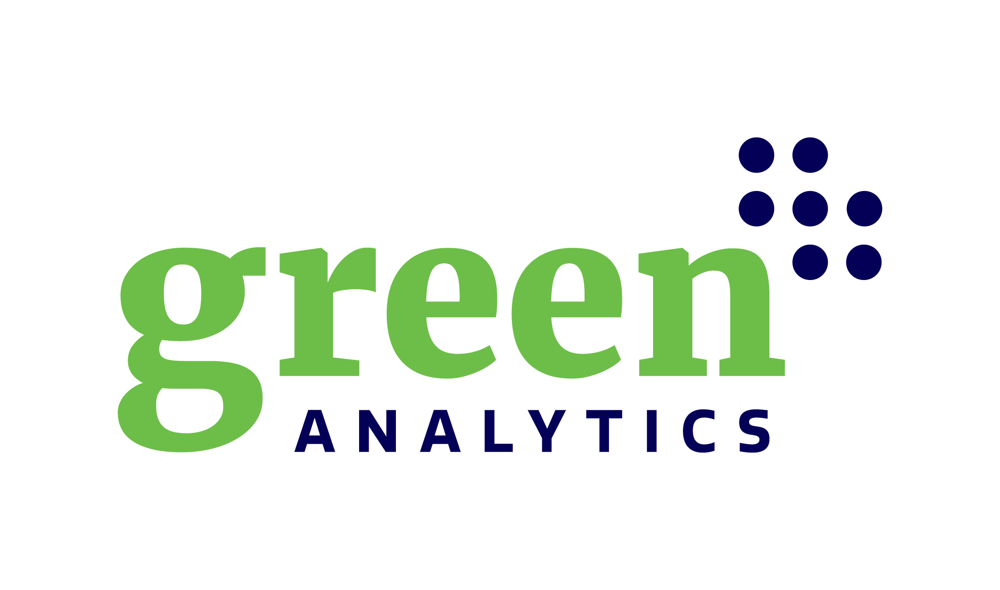

Green Analytics Group builds the data, analytics platforms, and AI decision-support tools Canada needs to deliver housing and value nature — open, interoperable, and in the public interest.
Green Analytics Group is a mission-driven organization that builds data infrastructure, analytics platforms, and decision-support tools to address Canada's most pressing housing and environmental challenges. We collect and steward trusted data, organize it into open national commons, and apply advanced analytics and AI — so governments, builders, and communities can allocate capital efficiently, accelerate delivery, and improve environmental outcomes.
National repositories and standards for housing and natural-asset data — open, interoperable, and Indigenous-data-sovereignty aware.
BuildBlox and Birch turn open data into site assessments, valuations, risk analysis, and investment-ready recommendations.
Faster project delivery, reduced risk, smarter capital allocation, and measurable environmental and community benefit.
From environmental economics to housing software, agriculture to forestry to natural-capital markets — each company applies shared data infrastructure to a critical sector.
Natural asset management, ecosystem service valuation, climate-risk and environmental economics for governments across Canada — home of the Birch natural-asset platform.
Data & software for housing and buildings — BuildSense and BuildBlox.
Canada's open housing data & AI commons, accelerating delivery with the DASH platform.
SmartBarn analytics and computer vision for healthier herds and better welfare outcomes.
An Indigenous-led forest economy — carbon, biodiversity, and sustainable timber.
Carbon and biodiversity markets, ESG, and climate finance for working lands.
Green Metrics is the group's software arm — the leader in data analytics and intelligence for housing, real estate, and construction. Its platforms turn fragmented public and building data into investment-ready decisions.
Data & software for accelerating housing growth
BuildSense is a system of record and regulatory-grade RAG architecture that lets building service providers, engineers, and owners engage with a building's data, information, and performance information in one place.
AI site screening and identification, development feasibility with standardized pro-formas, Indigenous community planning, and a digital toolkit for modular manufacturers — permit-approved designs, lot selection, and energy/GHG assessments. Powers Open Housing Canada.
DASH — Digitally Accelerated Standardized Housing
A national not-for-profit building Canada's open housing data and AI commons — integrating parcels, zoning, building codes, infrastructure, and market data into one platform. Its DASH program identifies where housing can be built, matches a BIM design catalogue to parcels, and generates compliant, permit-ready packages automatically.
PLD applies AI and IoT to livestock facilities. Its SmartBarn platform combines environmental sensors, energy and air-quality monitoring, and computer vision with audio to monitor animal health and welfare around the clock.
Partners include Sunterra Farms and Tyson Foods.
AI for agriculture facility management
A new Indigenous forest economy
An Indigenous-led joint venture between the Wolastoqey Nation and Green Analytics, rooted in generations of stewardship of the Wolastoq watershed. The partnership turns improved forest management into four revenue streams — verified forest carbon credits, nature & biodiversity credits, sustainable timber, and advanced wood products — aggregating woodlots and monitoring forest health through the WFP App.
Acadian Forest, New Brunswick.
Impact Natural Capital connects natural-capital and carbon markets to working lands. It brings carbon and biodiversity markets, ESG, climate finance, and nature-based solutions together — and, through partners in agri-food traceability and on-farm climate programs, links verified environmental outcomes to climate finance.
Carbon · biodiversity · climate finance
Environmental economics & analytics
The consultancy at the group's foundation. We help governments and organizations value nature and plan infrastructure — natural asset inventories, ecosystem-service valuation, climate-risk assessment, GIS and spatial analytics, housing analytics, and Indigenous planning — with projects for municipalities and agencies across Canada. Its natural-asset intelligence platform, Birch, supports inventories, ecosystem-service valuation, and climate-adaptation planning.
Talk to our AI assistant to explore our work, or reach the team directly.